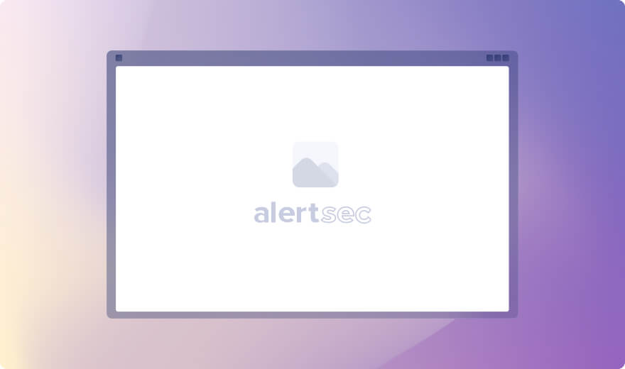

On March 1, 2017 cybersecurity regulation 23 NYCRR 500 came into effect in the State of New York, introducing some of the toughest new cybersecurity regulations in the country. While many financial institutions have been proactive in implementing cybersecurity programs, vulnerabilities remain across the network of trading partners, brokers and data processors in the industry. 23 NYCRR 500 sets minimum cybersecurity standards for businesses supervised by the New York State Department of Financial Services (DFS) to prevent data breaches and mitigate the risk of cyber attack.
Described as ‘first-in-the-nation’, 23 NYCRR 500 goes further than any previous US regulation seen before and is already influencing changes in legislation across other states and industries. By Fall 2017, amendments to data breach notification requirements had already been passed in California, Illinois, Nebraska, Tennessee, Delaware and Arizona.
The new regulations directly affect businesses regulated by the New York State Department of Financial Services (DFS) and licensed to operate under the Banking Law, the Insurance Law or the Financial Services Law. This includes banks, trusts, budget planners, check cashers, credit unions, money transmitters, licensed lenders, mortgage brokers or bankers, and insurance companies.
Medium and large enterprises that don’t qualify for exemption should already have started on the compliance journey and have a number of measures in place. However, one of the major changes introduced in 23 NYCRR 500 is responsibility for third party service provider security: section 500.11. This represents a big security challenge because there is often very little visibility of third party practices and compliance.
The compliance deadline for this section is March 1, 2019 but organizations should take action now to implement the necessary assessments, data protection measures and transition to new agreements. AlertSec’s Third Party Encryption module ACCESS provides a number of features that will assist in this area of compliance.
Small enterprises working for large enterprises should expect strict data protection measures being introduced by their clients. 23 NYCRR 500 requires covered entities (client organizations) to implement security policies relating to third party data protection codes of conduct. As a result, compliance with encryption may be a condition for working with those clients, regardless of whether the SMB may qualify for exemption or is not regulated by the DFS, such as CPAs (certified public accountants).
It is therefore strongly recommended that SMBs take steps now to document your data protection program and policies, and review your AlertSec service to ensure correct deployment of the appropriate compliance modules.
Organizations not operating in New York State may not have to take immediate action regarding cybersecurity regulations but it is a matter of when, not if, compliance will be required by other states. These strict cybersecurity rules may seem onerous especially for SMB’s with limited in-house IT resources. However, it makes sense for organizations to proactively review and strengthen their data protection measures. Time spent now to review and enforce deployment of your AlertSec services will simplify compliance in the future, as well as helping to protect your business now against cyber threats.
Transition periods have been specified within the new regulations to allow firms time to undertake the relevant risk assessments, implement security measures within their own organizations, and then address third party data protection. All covered entities should already have started on the compliance journey and have a number of measures in place. This includes organizations eligible for exemptions.
This document focuses on the data protection measures that are required for 23 NYCRR 500 compliance, such as encryption, training and third party management.
| 23 NYCRR 500 Section | Compliance Deadline |
| RSection 500.09: Risk Assessment | March 1, 2018 |
| Section 500.14a: Training | March 1, 2018 |
| Section 500.13: Limitations on data retention | September 3, 2018 |
| Section 500.14b: Monitoring | September 3, 2018 |
| Section 500.15: Encryption of Non-public Information. | September 3, 2018 |
| Section 500.11: Third Party Service Provider Security Policy | March 1, 2019 |
Table 1 – Refer to the DFS website for the full list of transition dates: https://www.dfs.ny.gov/industry_guidance/cyber_faqs

The financial services industry is a significant target of cybersecurity threats. Advances in digital technology have put data at the center of commerce and public services. Market demands for sharing data, connecting devices and accessing remote networks have improved services and productivity, but also opened up new risks to individuals and organizations. Data breach reports continue to demonstrate how cybercriminals can cause significant financial losses for organizations, for members of the public and the government through identity theft and fraud.
The principles behind 23 NYCRR 500 recognize that the threat landscape has changed significantly and, as a result, the scope of cybersecurity needs to be far more extensive.
The finance industry handles a great deal of sensitive financial information on a daily basis. Not only has the threat landscape changed through ever more sophisticated cyber crime, but the cost of cybercrime has also escalated. A data breach risks huge fines, impacts the ability of the organization to function during investigation and recovery, threatens brand reputation, potential impacts the personal security of individuals and their property, and risks fraud against other institutions and service providers. Therefore, 23 NYCRR 500 elevates importance of cybersecurity to board level, mandating the appointment of a Chief Information Security Officer (CISO).
Today’s financial and public services are made possible through the ability of large and small enterprises to share and process public and non-public information collaboratively. Sensitive data that is controlled by a large corporation is stored and processed, and therefore at risk, beyond the boundaries of the traditional corporate network.
Regulation 23 NYCRR 500 is designed to improve protection of personal information that could be used for identity theft, as well as the material information of regulated entities that could impact market confidence if disclosed. As a result, 23 NYCRR 500 goes beyond protection of financial data and includes personal health data and the IT infrastructure itself.
If your organization has existing cybersecurity policies in place, the scope of risk assessments and data protection measures may need to be expanded to address this broader definition
Encryption is a cornerstone of data protection within the new regulations to protect nonpublic Information in transit and at rest (sections 500.15 and 500.11).
Encryption needs to cover the data you know about in documents and spreadsheets on computers, and the data you may not be aware of: background copies that are downloaded to the computer hard-drive by apps even when processing cloud-based data; the copies shared between staff and third party subcontractors on removable media; hidden data such as author details embedded in documents; IP addresses embedded in emails; and login credentials stored by browsers. This is where the AlertSec service plays a critical role.
AlertSec provides strong protection against accidental loss of all data on endpoint devices: on computers and removable media, for files and documents stored on the hard drive as well as embedded in emails and browsers. The Alertsec Service enables your organization to:
This section highlights many, but not all, of the key requirements within 23 NYCRR 500. For the full details of the regulations, references are provided at the end of this document.
Compliance deadline: March 1, 2018
The risk assessment provides the essential information about where the organization is vulnerable, and the effectiveness of existing cybersecurity measures. An important requirement within 23 NYCRR 500 is the need to conduct the risk assessment regularly. Organizations naturally evolve, with changes of personnel, suppliers, software and mobile devices. The risk assessment is not a one-time activity, but needs to be an integral part of business management procedures in order to respond to technical developments, changes in the business model, and evolving threats.
With AlertSec, you can be confident that your encryption software is continuously being developed to respond to developments in mobile device technology and cyber threats, and maintain maximum protection.
Compliance deadline: March 1, 2019
Regulated businesses must protect not only their own technical infrastructure but also that of third-party trading partners. Many SMB’s have failed in the past to implement even basic data protection measures such as encryption, either due to perceived cost or lack of in-house IT skills. 23 NYCRR 500 defines minimum standards for cybersecurity and makes data owners responsible for security of shared customer information, even if they don’t manage that information themselves.
For data owners, this represents a big challenge because there is often very little visibility of third party practices and compliance. AlertSec’s compliance module ‘AlertSec ACCESS’ addresses this issue head-on. It provides large corporations with visibility and control of compliance beyond the corporate network; for SMBs, the cloud-based policy controlled service enables rapid compliance with total endpoint encryption standards for all endpoints, such as computers, smartphones and tablets.
Compliance deadline: March 1, 2019
This section specifies the use of effective controls, which may include Multi-Factor Authentication, to prevent unauthorized access or to manage remote access from an external network.
Organizations should review access privileges and authentication methods, not only for user access to non-public information, but also for administration-level access to network management systems.
AlertSec’s password management process automatically locks a user account after a configurable number of failed login attempts, preventing unauthorized access. Password reset and data recovery processes are also designed to ensure devices are unlocked only for the authorized user.
AlertSec’s two-factor authentication for administrators helps to prevent unauthorized changes to security policies or encryption compliance.
Compliance deadline: September 3, 2018
The requirements in this section are consistent with other data protection regulations, ensuring that personal data is not retained for longer than required for legitimate business purposes, and is securely disposed of. The challenge for data owners is to have visibility of where data is stored, in particular across third party service providers.
Firms should ensure that the risk assessment includes an audit of all personal and nonpublic information, where it came from, where it is stored, who it is shared with and how it is shared.
Compliance deadline: September 3, 2018
This section requires regulated firms to use controls designed to monitor the activity of Authorized Users. AlertSec’s Compliance Check monitors of all endpoints for compliance with pre-defined security policies, supporting reporting of deployment, management and compliance with software update installation.
Compliance deadline: March 1, 2018
As part of its cybersecurity program, firms should provide regular cybersecurity awareness training for all personnel. A significant point in the regulations is that training should be relevant to the nature of the organization itself ie. the risks identified by the risk assessment. For SMBs with minimal in-house IT infrastructure and data processing, but a high proportion of mobile workers dependent on mobile devices for productivity and service delivery, the nature of cybersecurity risks will be different to large corporations with extensive information systems.
With AlertSec, SMBs can keep track of evolving threats and relevant cybersecurity risks through AlertSec support team, and use the regular customer communications material to support employee training.
Compliance deadline: September 3, 2018
Unlike other regulations where encryption is recommended, 23 NYCRR 500 mandates encryption for regulated organizations unless it is not feasible and effective alternative controls are implemented. This includes encryption of data at rest and data in transit.
AlertSec provides full disk encryption that protects any digital personal or sensitive data on the computer. The service also includes media encryption as standard. This automatically encrypts any personal data stored on removable storage media such as USB sticks and external hard drives based on policy, enabling secure data sharing with other authorized users.
Compliance deadline:
The regulation includes strict notification requirements, whereby an organization must notify the appropriate body no later than 72 hours from discovering that a cybersecurity event has occurred.
Ensure that training of employees and third parties includes knowledge of how to recognize and respond to a potential data security incident.
The AlertSec Service provides data protection as a service. Instead of requiring the purchase of several individual components and needing to manage them separately, the AlertSec Service provides a single, policy based, cloud-managed package of components that support your compliance requirements . The following modules and service features are available:
| Complance module | Description |
| Full Disk Encryption (FDE) | Automatic encryption for any digital personal or sensitive data on the computer. Ensures that only authorized users can access data on protected computers. AES-256 encryption for maximum protection, certification to FIPS 140-2, Common Criteria EAL4 and BITS. |
| Media Encryption/Port Control | Media Encryption automatically encrypts any personal data stored on removable storage media such as USB sticks and external hard drives based on policy. Data remains transparent to authorized users. Enables secure data sharing with other authorized users. Port control prevents use of unknown/unauthorized media on the computer, helping to prevent unsecure movement of personal or sensitive data. |
| Compliance Check | Scans and checks all endpoints for compliance with pre-defined security policies, enabling demonstration of security software deployment and management of software update installation compliance. |
| Anti-Malware/Program Control | Malware detection and prevention using signatures, behavior blockers and heuristic analysis. Policy controlled Program (application) Control can be configured to limit the applications that can be run on the system to only those that have been explicitly approved, helping to prevent threats to data integrity. |
| Firewall | Proactive policy based protection: the firewall blocks targeted attacks and stops unwanted traffic, keeping data and systems safe. |
| Encryption for third parties | Monitor and enforce full disk encryption policies across third party data processor service providers. Enables demonstration of security software deployment and management of software update installation compliance. |
| Two factor authentication for administrators | Additional security for privileged administrator accounts on the AlertSec admin console, helping to prevent unauthorized access or changes to security policies. |
| Pre-boot authentication | Ensures that only authorized users will be allowed access to personal or sensitive data stored on the device. Prevents anything being read from the hard disk, including the operating system, until the user has provided valid login credentials. |
| Password management | Automatic locking of a user account after five failed login attempts, preventing unauthorized access. AlertSec help-desk processes for password reset and data recovery are designed to ensure devices are unlocked only for the authorized user. |
| Software development and support | AlertSec manages the ongoing development and release of security software updates to maintain maximum protection. Regular customer communications about security risks and good practice enable employee training and security policy assessments. |
Table 2 – AlertSec Compliance Modules and Service Features
The challenges of 23 NYCRR 500 and other regulations can certainly be daunting, especially for smaller businesses that may have limited in-house resources. The series of compliance deadlines provides an outline plan to simplify the transition to compliance. Even if your firm is not a covered entity or is eligible for exemption, we strongly recommend that you use the 23 NYCRR 500 standards to assess and improve the strength of your own data protection policies. Obligations on third party service providers are likely to change, and data protection legislation in other states is expected to move towards these standards. Action taken now will ensure your organization is positioned to align with those requirements, as well as protecting your business from the damage that can arise from a data breach.
The following is a recommended but not exhaustive list of actions to enhance your readiness for compliance:
Arrange an audit of the personal and sensitive data that your organization holds, where it came from and where it is shared. This is essential to understand whether existing data protection measures are sufficient, and whether your organization has additional responsibilities for third party service provider security.
The transitional deadline has passed for this requirement (August 28, 2017). However, organizations should ensure that the incident response plan keeps pace with the implementation of further cybersecurity policies such as third party security.
Provide employees and staff working for third party service providers with sufficient tools and training to identify actual or suspected breaches. Create an escalation procedure for promptly notifying the appropriate contact person. Ensure AlertSec is one of the key contacts in your escalation procedure to alert the support team when a laptop or removable device has been lost or stolen.
The first deadline for encryption compliance is not until September 3, 2018. However, it is strongly recommended that organizations review the current status of encryption compliance now in order to protect against the risk of a data breach.
Review the available AlertSec services to maximize security and demonstrate compliance, for example:
Employees must be trained and equipped to protect data. Ensure employees and service providers
Use the regular customer communications from AlertSec to support employee training, to raise service provider awareness, to inform executives of changing cyber-security threats and risk mitigation advice, and to keep data protection and security at the forefront of everyone’s minds.
Section 500 of Title 23 of the Official Compilation of Codes, Rules and Regulations of the State of New York: the New York State Department of Financial Services (NYDFS) 23 NYCRR 500.